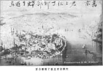
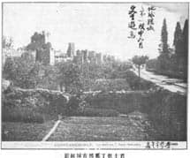

Resim: 2
Resmin üzerinde: 突京, 君士坦丁那布戊申更生游焉, Türk başkenti, Konstantinapol, 1908 yılı, burada bulunmuştum.
Resmin altında: 突厥京, 君士坦丁那布全景. Türk başkenti, Konstantinapol’ün genel görünümü.

Resim: 3
Üstünde: 地球环城, 第一戊申六月更生游焉, Dünya gezisi sırasında, 1908 Temmuz ayı, burada bulundum.
Altında: 君士坦丁二千年古城, Konstantin’in 2 bin yıllık eski surları.
En altta: 君士坦丁那布古城拓影, Konstantinapol’ün eski surlarının fotoğrafı.